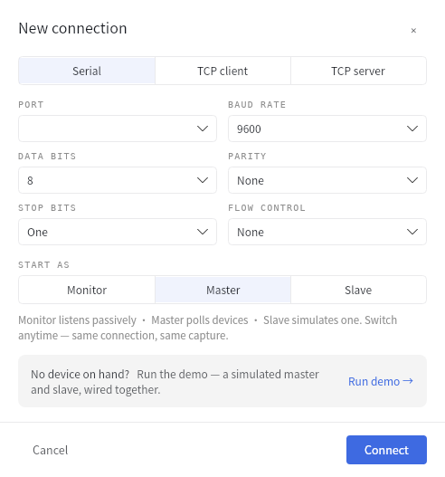
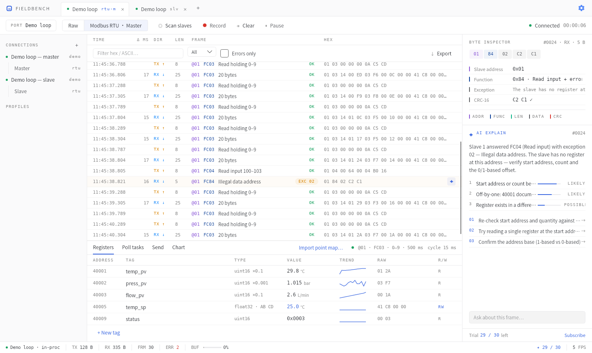
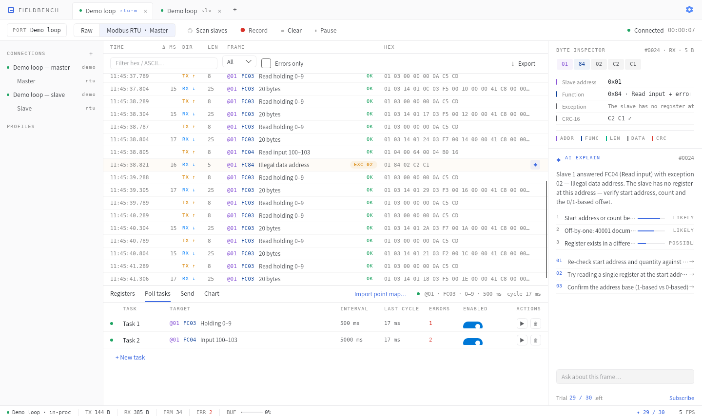
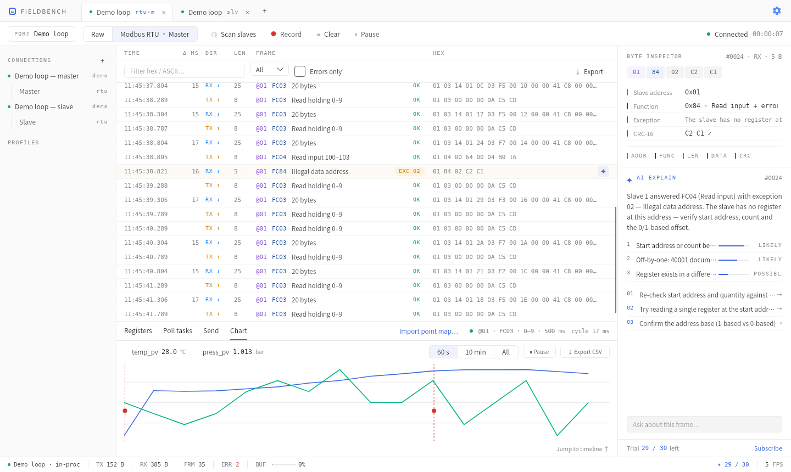
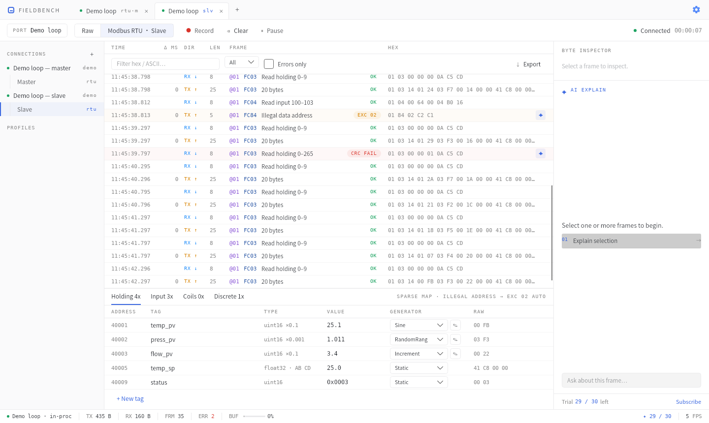
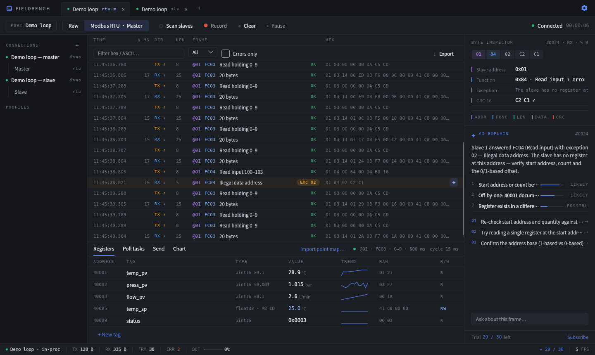
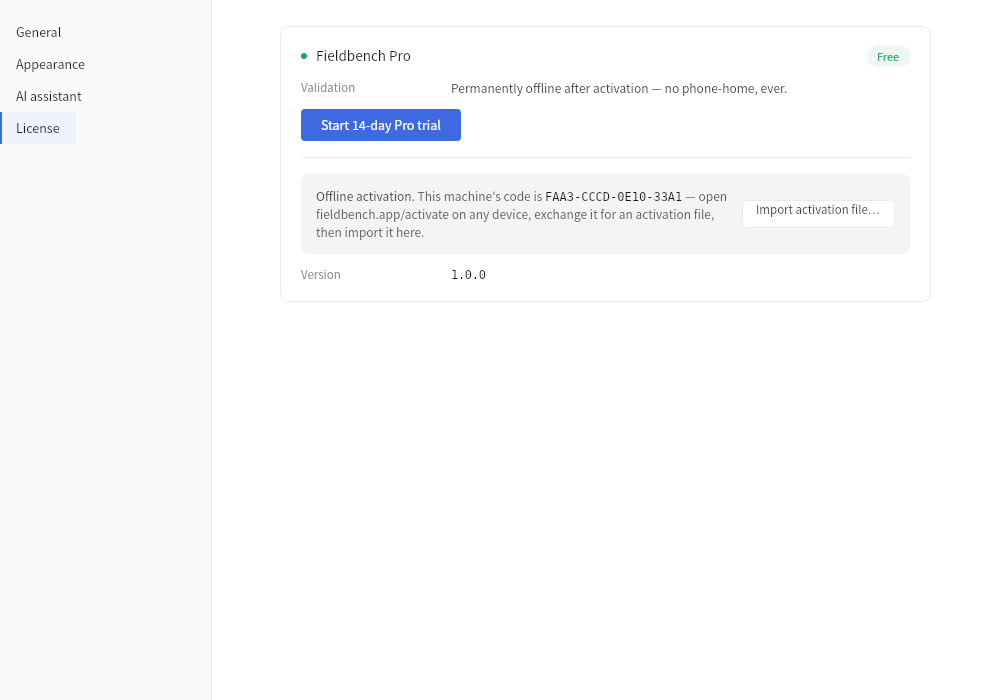

Fieldbench 使用教程
串口、Modbus 在同一条报文时间轴上——选中任何一帧，AI 告诉你它是什么、哪里错了、下一步查什么。本教程带你从安装走到全部功能。
0160 秒快速上手
Fieldbench 免安装即可运行：下载 portable zip 解压双击，或运行安装包。首次启动不会给你一个空面板——直接弹出「新建连接」：

首跑对话框：已插入的 USB 转串口会被自动枚举并默认选中
02连接设备
三种连接方式，建立后随时可在顶部工具栏热改参数——改波特率、校验位立即生效，会话和已捕获的数据全部保留，绝不需要删掉重建：
| 类型 | 用途 | 参数 |
|---|---|---|
| Serial 串口 | 485/232 现场总线、USB 转串口 | 波特率（标准档或任意自定义值）、数据位 5–8、校验 N/E/O/M/S、停止位 1/1.5/2、流控 |
| TCP client | 连接 Modbus TCP 设备/网关 | 目标 IP : 端口（默认 502） |
| TCP server | 本机监听，做 TCP 从站仿真 | 监听端口，支持多个主站同时接入 |
每次成功连接会自动存为配置档（左栏 PROFILES），下次一键重连。USB 设备意外拔出不会崩溃——会话保留，插回后点状态栏重连即可。
03三类会话
同一个连接可以开多个会话（视角），它们共享同一份字节流：
| 会话 | 做什么 | 典型场景 |
|---|---|---|
| Monitor 监视 | 被动收听，不发一个字节 | 挂在 485 总线上抓包排查现网问题 |
| Master 主站 | 主动轮询设备 | 读写寄存器、验证点表、联调仪表 |
| Slave 从站 PRO | 模拟一台设备应答 | 上位机开发时手边没有 PLC |
04读懂报文时间轴

Master 会话运行中：一帧 CRC 失败被选中，右栏给出字节级解析与 AI 诊断
每行一帧，列依次是：时间（毫秒精度）、Δ ms（请求→响应延迟）、方向（TX↑ 橙 / RX↓ 蓝；总线监听时显示语义方向 M→S / S→M）、长度、解析摘要、原始 hex。
协议字段全产品统一四色：从站地址 @01 功能码 FC03 长度 校验/错误。行级状态一眼可辨：异常响应 EXC 02 琥珀底、校验失败 CRC FAIL 红底，行尾出现 ✦ 图标可直接 AI 解释。
过滤与暂停
- 过滤条：关键字（匹配 hex、ASCII、功能码、从站地址）、方向 All/TX/RX、仅异常帧
- Pause 只暂停渲染，采集从不停止——翻历史时新数据仍在后台入库
- 缓冲默认 10 万帧环形滚动（设置中可调）
协议自动识别
Monitor/Raw 流上，连续 3 块数据通过 CRC-16 校验（单帧巧合概率 1/65536，三帧即确定）时，时间轴顶部弹出非模态提示条：「Modbus RTU detected — 12/12 chunks pass CRC-16 · Switch lens」。点一下即切换解析，历史全量重解析；随机数据流永远不会误报。
05字节检查器
选中任意一帧，右栏上半部分即逐字节展开：每个字节按所属字段着色，悬停任意字节显示字段名和十进制/十六进制/二进制值；下方字段列表给出逐项解析（从站地址、功能码、字节数、数据、CRC——校验失败时同时显示期望值）。多选帧（Ctrl/Shift 点击）时检查器显示最后选中的一帧，AI 解释则携带全部选中帧。
06Modbus 主站
支持 RTU 与 TCP，功能码 01 / 02 / 03 / 04 / 05 / 06 / 0F / 10，超时重试每连接可配（默认 1000 ms × 3）。底部面板四个页签：Registers · Poll tasks · Send · Chart。
6.1 寄存器网格与写值
- 每行一个标签：地址（40001 式 PLC 地址显示）、名称、数据类型、当前值、趋势 sparkline、原始 hex、读写属性
- 数据类型 8 种：
bit / int16 / uint16 / int32 / uint32 / float32 / double / string，多寄存器类型支持 4 种字节序AB CD / CD AB / BA DC / DC BA，缩放与单位每标签独立配置 - 写值：蓝色数值即可写——点击 → 输入 → Enter，自动选择 05/06/0F/10 下发并回读确认；写入失败在行内以 ⚠ 提示原因
6.2 轮询任务

多任务并行定义，同一连接内自动串行调度，互不冲突
每个任务 = 从站地址 + 功能码 + 起始地址 + 数量 + 周期。开关即启停，行内显示实测周期与错误计数；▶ 按钮对停用任务做单次执行。多个任务读回的数据都汇入同一张寄存器网格。
6.3 从站扫描
轮询超时排障的第一动作：工具栏 Scan slaves 遍历地址 1–247（探测功能码与超时可配，默认 FC03 × 200 ms），实时列出响应者及响应耗时——回异常码也算活着（说明设备在线只是地址范围不对）。串口下可勾选同时扫描常见波特率 × 校验矩阵，约加 4 分钟。找到后一键 Open as Master。
07数据曲线

异常帧在曲线上标红：点击红点直接跳回时间轴对应报文
轮询中的数值标签自动成为曲线通道（Free 版 2 通道FREE，Pro 无限）。窗口 60 s / 10 min / 全部，可暂停、可导出 CSV。值不对 → 是哪帧 → 为什么这条链是 Fieldbench 独有的：曲线上的红色异常点一点，时间轴跳转选中那一帧，再点 ✦ 让 AI 解释。
08从站仿真 PRO

TCP 从站监听 :502：请求/响应进同一时间轴，值发生器让数据「活」起来
- RTU（串口）或 TCP（监听端口，多个主站可同时接入），从站 ID 可配
- 四类寄存器区页签：Holding 4x · Input 3x · Coils 0x · Discrete 1x，65536 地址空间稀疏存储——只有你定义过的地址存在，读到未定义地址自动回
EXC 02，未知功能码自动回EXC 01 - 值发生器：每个标签可选 Static / Increment / Random / Sine，点 ✎ 配置幅值、周期、范围、步长——上位机开发者最常用的「假设备出活数据」
- 主站写进来的值即时反映在网格上并标注 written by client
09AI 报文解释

AI 输出固定结构：这是什么 → 异常在哪 → 原因按概率排序 → 下一步检查清单
入口：异常帧行尾的 ✦ 图标一键解释；或选中 1–N 帧后点右栏 AI 面板的 Explain。可以在输入框追加你自己的问题（"为什么每隔 30 帧坏一次？"）。
五类问题它都给出工程师级的排查方向：
| 场景 | AI 会告诉你 |
|---|---|
| CRC 校验失败 | 区分单比特线路干扰 / CRC 字节序颠倒 / 波特率不匹配的特征，并给出期望校验值 |
| 异常码 01–04 | 翻译成人话 + 各自的排查清单（如 EXC 02 → 核对起始地址、数量、0/1 基偏移） |
| 满屏乱码 | 识别波特率错误的典型字节直方图特征，建议参数矩阵扫描 |
| 发出无响应 | 结合当前连接参数生成核对单：从站地址、A/B 反接、终端电阻、波特率… |
| 正常帧 | 逐字段讲解含义（也是学 Modbus 的好方法） |
隐私：首次使用会弹窗说明发送范围——仅在你按下 Explain 时发送所选帧、连接参数与前后约 20 帧摘要，网关不存储任何内容；设置页可随时预览「将发送什么」。断网时 AI 按钮置灰，其余全部功能照常。
配额：免费送 30 次解释试用；订阅 $6.9/月 得 1000 次/月。余额实时显示在状态栏与 AI 面板底部。
10AI 点表导入
拿到新设备的第一小时不用再抄手册了。Registers 页签 → Import point map…：
4xxxx · PLC 1 基 还是 0 基协议地址。这是点表导入出错的头号来源，所以绝不让 AI 猜勾选 Save device profile 会同时导出设备档案 JSON，下台同型号设备直接复用，也可以发给同事。配额：免费 3 次提取试用，订阅含 30 次/月。
11导出与记录
- 导出：时间轴右上 ↓ Export → CSV / JSON / 原始 bin / txt 日志。选中了帧就导出选中部分，否则导出全部——挂一晚上抓的包第二天直接发给厂商
- Record：工具栏红点开启边采边写盘（文本日志追加），环形缓冲只管屏幕显示，超长挂机取证不怕早晨的异常帧被冲掉
- 曲线 CSV：Chart 页签单独导出（时间戳 + 各通道列）
12激活 Pro

设置 → License：机器码、在线激活与离线激活文件导入都在这里
| 版本 | 包含 |
|---|---|
| Free | 1 个活动连接 · Master 全功能码 · 时间轴/检查器全开 · 曲线 2 通道 · AI 试用（解释 30 次 + 提取 3 次） |
| Pro（买断） | 无限连接 · 从站仿真 · 曲线无限通道 · 优先支持 · 1 个 license 激活 2 台设备 |
所有 Pro 功能可免费全功能试用 14 天，无需信用卡（设置页一键开启）。
在线激活（有网，10 秒）
购买后 license key（FB1-XXXX-XXXX-XXXX）即时发到邮箱 → 设置 → License → 输入 key → Activate。完成。
离线激活（现场无网机器）
8F3A-22C1-90DE-4471）fieldbench.app/activate，输入 key + 机器码，下载激活文件13常见问题
时间轴全是乱码/CRC FAIL？
九成是波特率或校验位不对。选几帧点 ✦ 让 AI 看字节特征，或直接 Scan slaves 勾选参数矩阵扫描，让它替你把 9600–115200 × N/E 全试一遍。
发请求没有任何响应？
按顺序查：① Scan slaves 确认从站地址；② 485 的 A/B 线对调试试（现场第一高发）；③ 终端电阻；④ 波特率/校验与设备一致。AI 的无响应核对单会结合你当前的连接参数生成。
Monitor 里为什么都是 RX？
被动挂在总线上时物理方向确实全是接收。切到 Modbus 解析后，Fieldbench 按帧语义（请求/响应结构）自动推断并显示 M→S / S→M，Δ 列即总线上真实的响应延迟。
自环测试怎么做？
本机 Master ↔ Slave 需要两个连接（串口用 com0com 虚拟串口对，或 TCP 用 127.0.0.1）。Free 版限 1 个连接，此场景需要 Pro——或先用 Demo 模式体验同样的效果。
深色主题 / 中文界面？
设置 → Appearance，主题与语言（English / 简体中文）即时切换，无需重启。
数据会上传吗？
不会。除了你主动点击 AI 解释/提取时发送所选内容外，一个字节都不出机器。遥测默认关闭。